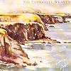

Celtic Lyrics Corner > Artists & Groups > Tannahill Weavers > Land Of Light > The American Stranger
|  | The American Stranger |
| Credits : | Traditional; arranged by the Tannahill Weavers |
| Appears On : | Land Of Light |
| Language : | Scots-English |
Lyrics :
I'm a stranger to this country, from Americay I came
There's no one here that kens me nor yet can tell my name
I came o'er to this country tae wander for a while
Far frae my bonnie dearie, aye monie's the weary mile
Some say that I am rakish, some say that I am wild
Some say that I am guilty the lassies tae beguile
But I will prove them lying folk gin ye'll come alang wi' me
And be my leesome lassie on the plains o' Americay
Gie my regards tae Nancy wha bides on yonder hill
And likewise unto Betsy, she's a lass I like fu' well
But gie my love tae Maggie, for she's my heart's delight
I'd row her in my erms through a year lang winter's night
The ship that's on the saut, saut sea maun sail without her sails
The wee, wee fishies grow until they turn to muckle whales
In the middle o' the ocean maun grow a rowan tree
Afore that I prove false tae her that's gi'en her love tae me
So send me word, my darlin', and westward I will sail
On a packet out of Leith, my dear, on a brisk and a pleasant gale
And when that I am landed, you'll plight your troth tae me
And we'll dance and sing thegether on the plains o' Americay